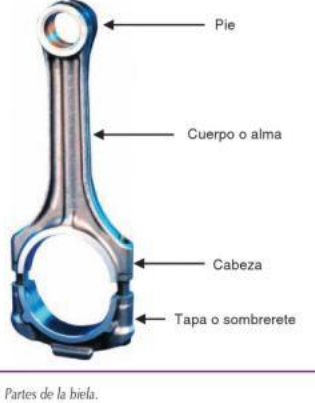

Biela
Biela: la biela es la pieza que comunica el bulón con al muñequilla transmitiendo los esfuerzos debidos a la presión de los gases sobre el pistón al cigüeñal. Debe tener una rigidez elevada minimizando su peso para disminuir las inercias. Además el peso de las bielas de un mismo motor debe ser el mismo para no generar desequilibrios. Aparte de la fuerza de los gases de la combustión, la biela tiene que soportar fuerzas de inercia alternativas y rotativas debidas a su movimiento. Las partes que tiene la biela son: pie de biela, cuerpo o alma, cabeza de la biela y la tapa o sombrerete de biela.
